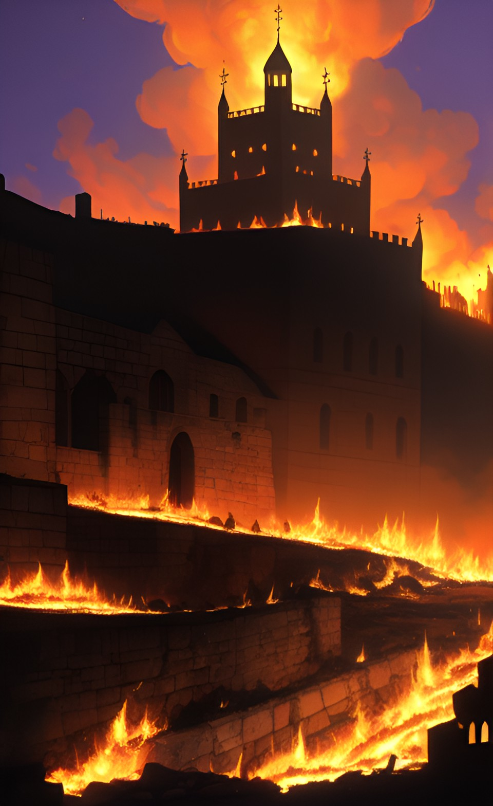

A traição

Uma das pessoas que foi convocada para o exército-não se sabe quem-foi de encontro ao imperador das Terras Santas e lhe contou o que estavam tramando.
Como forma de vingança, ao mero pensamento de atacá-lo, ele vai até o feudo e queima tudo e todos que ali habitavam.